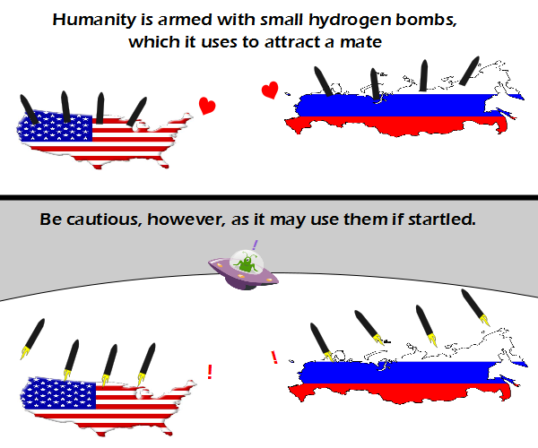

Comic JK 775
When I Feel Like It
⇤
<
?
>
⇥

⇤
<
?
>
⇥
Forum
.
RSS
.
Digg
.
Facebook
.
Reddit
.
Twitter
.
Stumbleupon
Enter your thoughts on number 775 here. Please, no spamming, trolling, or counting stars. Putin is one sexy president! I love cosmic encouter > Apparently, the US lost 4 states, judging by the stars. Also: Mandatory first What are you aspie? >> They would get cut off by the shape. There are in fact 6 columns that should be 5 stars each, and 5 columns of 4 each, for a total of (30+20) 50. But our current president has said there are 57 states.... >>> Also, it appears from the stripes that one of the original colonies was also lost. >>>> Nah, look up in Maine, it's got a small piece of the 13th stripe. >>>>>Or note the lack of AK or HI Awwwwwww.. the USA and Russia in love at last. <3 <3 <3 @alt text: us Seems a bit excessive to send up eight hydrogen-bombs for a single little green man. >Unless it's an incredibly huge saucer with an incredibly huge green man. >>Sounds like a bad porno.. >> ^ incredibly >>> ^ n Independence Day has taught us nukes can't destroy an alien spaceship, unless you take out their shields with a computer virus. >They only used one atom bomb, should have used eight >>no no no, the only thing that actually took down the alien shields was a witty remark from Will Smith! >>> +1 Occasionally I notice that this site has an actual forum that isn't really used much anymore. Really, a couple simple updates to it (like dates of last posts on its main page), and maybe ete can come back and host another Mafia game. > wow, i never noticed that before >>We need that again!!!!!! If Americans are yanks with tanks, what are Russians? >Soviets without caveats.